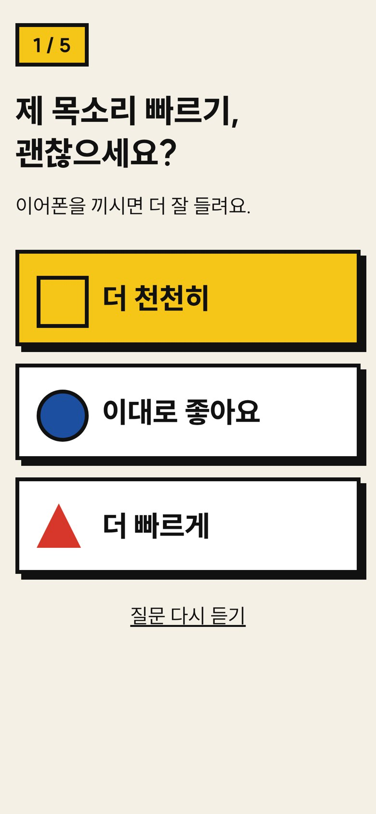
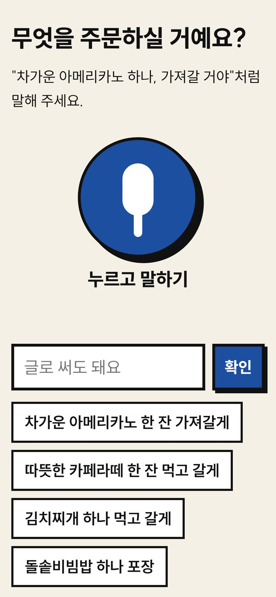
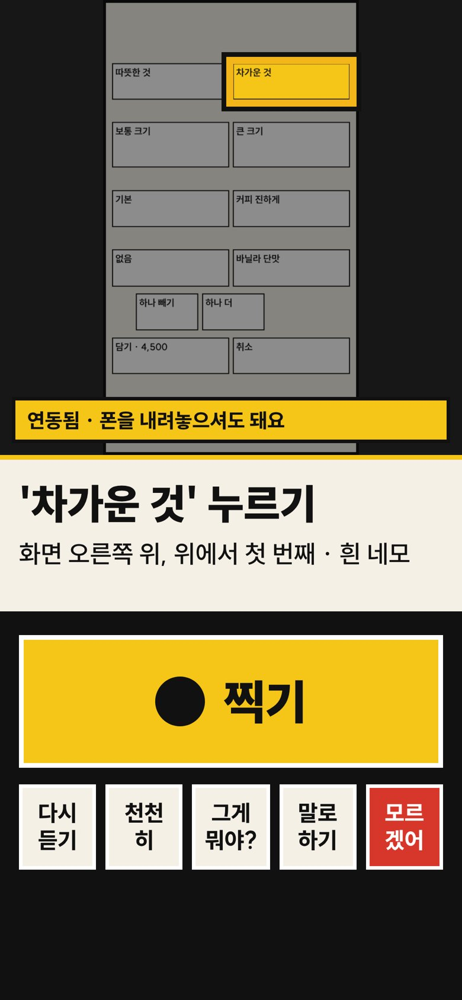
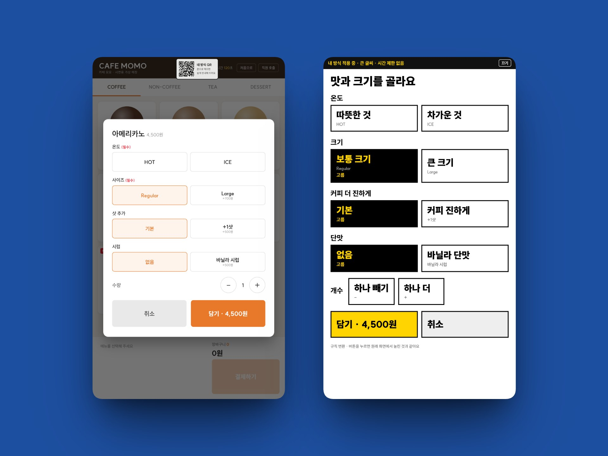

1
내 방식 정하기 (처음 1번, 1분)
목소리 빠르기, 글씨, 키오스크 경험, 적립·권유 처리를 목소리로 묻고 큰 버튼으로 답해요. 결과는 QR로 만들어 가족이 대신 보내 줄 수도 있어요.
왜 필요한가
64.2%
고령층 1만 97명을 조사한 결과예요.
보건복지부 「2020 노인실태조사」 (파이낸셜뉴스 2023.4 보도)
51.4%
뒷사람 눈치 49%, 그림·글씨가 작아서 44.1%가 뒤를 이었어요.
한국소비자원 고령소비자 키오스크 이용 조사 (파이낸셜뉴스 2023.4 보도)
2.4배
2019년 18만 9,951대 → 2022년 45만 4,741대.
과학기술정보통신부 「키오스크 접근성 현황조사」 (파이낸셜뉴스 2023.4 보도)
기존 해법은 키오스크마다 접근성 기능을 새로 넣어야 해서 느리게 퍼져요. 내 방식 QR은 지금 있는 키오스크에서 바로 쓸 수 있게 폰에서 시작합니다.
어떻게 쓰나
처음 한 번만 내 방식을 정하면, 그다음부터는 주문할 것을 말하고 키오스크를 비추기만 하면 돼요.

목소리 빠르기, 글씨, 키오스크 경험, 적립·권유 처리를 목소리로 묻고 큰 버튼으로 답해요. 결과는 QR로 만들어 가족이 대신 보내 줄 수도 있어요.

"차가운 아메리카노 한 잔, 가져갈게." AI가 주문으로 정리하고 "맞아요?" 하고 되물어요. 화면 전체를 읽지 않고, 목표까지 필요한 말만 해요.

키오스크를 찍으면 이어폰으로 한 단계를 알려 줘요. 누르고 나면 다음 단계로. 결제 전에는 금액을 읽고 꼭 "네"를 받아요.
두 가지 모드
AI 화면 변환
연동 키오스크는 자기 화면 구조를 알려 주고, AI가 어르신용 화면을 다시 설계해요. 변환된 버튼을 누르면 원래 버튼을 누른 것과 같아서 기존 결제 흐름은 그대로예요.

| 원제안자 답변 (사전질의) | 반영 |
|---|---|
| 카페·식당 우선 | 목업 카페·식당 키오스크로 시연 |
| 키오스크에 뜬 QR을 폰으로 스캔 | 키오스크 「내 방식 QR」 배지 → 폰 사진에서 자동 인식해 연동 |
| 화면 변환은 AI가 실시간으로 | /api/convert: AI 설계 → 검증 → 변환 화면, 같은 화면 저장 |
| 글씨 > 버튼 > 자세한 설명 | 변환 화면은 라벨이 가장 크고 설명은 선택, 넘치면 스크롤 |
| 화면 변환 성공률이 중요 | 평가에 변환 성공률·버튼 보존율·지어낸 버튼 수 지표 |
"쉽게 알아듣는다"의 정의
국립국어원(2024)이 70~80대 200명의 키오스크 사용을 조사해 낸 쉬운 언어 예시(웰던 → 바싹 익히기, 명세표 인자 → 명세표 받기)를 바탕으로 했어요.
| 층위 | 규칙 | 예시 |
|---|---|---|
| 말 | 외래어·전문어는 쉬운 우리말. 화면에 쓰인 글자는 그대로 읽고 뜻을 붙임 (화면에서 찾아야 하니까) | '아이스'라고 써 있어요. 차가운 것이라는 뜻이에요. |
| 길이 | 한 문장 7~12어절 이하 (경험에 따라) | 오른쪽 위를 보세요. |
| 할 일 | 한 번 안내에 할 일 하나 | 그걸 누르세요. |
| 위치 | 어디(9칸) + 생김새(색 네모) + 적힌 글자 + 할 일 | 화면 오른쪽 가운데에 주황색 네모가 있어요. |
| 걸러내기 | 광고·세트 권유·적립은 목표와 프로필에 따라 거절 안내 | 더 사라는 권유예요. '괜찮아요'를 누르세요. |
| 소리 | 빠르기는 내 방식대로, "천천히"라고 하면 바로 느리게 | Qwen3-TTS · 폰 내장 음성 |
안전장치
결제 화면이면 금액을 읽고 "네"를 받기 전에는 결제 버튼을 안내하지 않아요. 규칙으로 막아요.
세트 변경, 앱 설치 광고 같은 창은 "안 사도 돼요"라고 알려 줘요.
3번 막히면 주문 내용을 큰 글씨로 띄워 직원에게 보여 줄 수 있어요.
내 방식 QR에는 빠르기·글씨 같은 설정만. 이름·연락처·장애 여부는 받지 않아요.
우리 기술
AI에게 전부 맡기지 않았어요. 화면을 읽고 다시 그리는 일은 AI가, 틀리면 안 되는 일(어디를 누를지, 돈을 낼지)은 코드 규칙이 맡아요. 그래서 빠르고, 같은 화면에는 늘 같은 안내가 나와요.
AI가 하는 일규칙(코드)이 하는 일
"오른쪽 위, 노란 네모"는 AI가 지어낸 말이 아니에요. 버튼 자리를 9칸으로 나누고 픽셀 색을 재서 코드가 만들어요.
AI가 새 화면을 설계하면 검사기가 원래 버튼이 다 있는지, 없는 버튼을 만들지 않았는지 확인해요. 문제가 있으면 규칙 변환으로 바꿔요.
변환한 화면은 저장해 두고 다시 써요. AI 답이 늦어도 규칙 변환을 먼저 띄워서 기다리지 않아요.
안내를 정하는 코드 하나를 폰(브라우저)과 서버가 같이 써요. 그래서 시연 페이지는 서버 없이도 돌아가고, 어디서든 결과가 같아요.
앱 설치 없이 인터넷 주소로 열리는 웹앱이에요. 서버가 쓰는 외부 라이브러리는 1개뿐이고, 폰 4가지 크기 × 글씨 2단계에서 한 화면에 다 들어가는지 자동으로 확인했어요.
목업 키오스크 69화면을 자동으로 찍고, 비스듬히·흐리게·어둡게 바꿔 시험 사진 276장을 만들어요. 정답은 키오스크 코드가 알고 있어서 사람이 표시할 필요가 없어요.
성과 (2026.10.30 기준)
폰 앱이 말한 버튼을 그대로 누르는 자동 시험이에요. 사람은 끼어들지 않았어요.
5 / 5
카페 3개·식당 2개 목표, 다른 탭에 있는 메뉴까지
100%
69화면·389버튼, 빠짐·지어냄 0. 고침 없이 통과 73.9%, 나머지는 검증기가 쉬운 말로 고침
86.1%
카메라 모드, 흐리고 기울고 어두운 사진 포함 276장. 중앙값 2.3초
29.2 → 0
키오스크 원문 대비 안내 문장. 안내당 할 일 1개 이하
한계도 적어 둡니다. 규칙 변환·어려운 말 지표는 같은 사전으로 만들고 같은 사전으로 검사해서 높게 나와요. AI 화면 변환은 DeepSeek-V4.1-Flash로 쟀고(한 화면 2.7초), 18화면은 라벨에 어려운 말이 남아 검증기가 고쳤어요. 카메라 모드는 목업 키오스크를 찍은 합성 사진으로 쟀고, 광고 팝업(10/20)·옵션 화면(17/28)에서 많이 틀렸어요. 실제 매장 사진과 어르신 사용자 시험은 아직이에요. 자세한 내용은 EVAL.md.
자주 묻는 질문
아니요. 주소나 QR로 바로 열리는 웹 앱이에요. 자주 쓰신다면 폰 홈 화면에 추가해 앱처럼 쓸 수 있어요.
카메라 모드는 화면이 보이는 키오스크라면 쓸 수 있어요. 목업 키오스크 사진 276장에서는 누를 버튼을 86.1% 맞혔고, 실제 매장 사진으로는 아직 재지 않았어요. 「내 방식 QR」 배지가 있는 연동 키오스크는 키오스크가 화면 구조를 직접 알려 주기 때문에 더 정확하고, 화면도 내 방식으로 바뀌어요.
카메라 모드는 아무것도 하지 않아도 돼요. 연동 모드는 화면의 버튼 정보를 보내는 작은 코드와 화면 구석의 QR 배지만 넣으면 돼요. 결제·주문 시스템은 그대로 둬요.
아니요. 버튼을 누르고 카드를 꽂는 건 사용자예요. 결제 화면에서는 금액을 읽어 드리고, "네"라고 확인하기 전에는 결제 버튼을 안내하지 않아요.
"다시 찍어 주세요"라고 하거나, 같은 화면에서 세 번 막히면 주문 내용을 큰 글씨로 띄워 직원에게 보여 줄 수 있게 해요. 위치와 색은 AI가 아니라 규칙 코드로 계산해서 지어내지 않아요.
처음 설정은 질문 다섯 개를 큰 버튼으로 고르면 끝나요. 가족이 대신 설정해서 내 방식 QR로 보내 줄 수도 있어요. 찍기 버튼은 화면 아래의 큰 노란 버튼 하나예요.
네. 주문할 것을 말로 하고, "다시", "천천히", "그게 뭐야?", "모르겠어" 같은 말도 알아들어요. 음성 인식이 안 되는 폰에서는 버튼과 글로 똑같이 할 수 있어요.
내 방식 QR에는 말 빠르기·글씨 크기 같은 설정만 들어가요. 이름·전화번호·장애 여부는 받지 않아요. 키오스크 사진은 안내를 만드는 데만 쓰고 서버에 사진을 남기지 않아요.
네. 화면을 읽고 음성을 만드는 AI가 서버에서 돌아가요. 이 사이트의 시연 페이지는 서버 없이도 돌아가요.
만든 사람들팀 Camelon박도연여지원윤진영